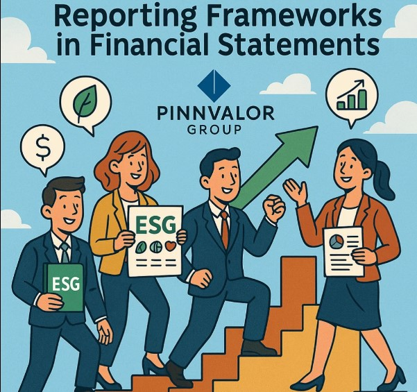

The Evolution of ESG Reporting Frameworks in Financial Statements
In today’s rapidly changing business environment, the integration of Environmental, Social, and Governance (ESG) factors into corporate strategy and reporting has become not only a regulatory requirement but also a market-driven necessity. What was once a voluntary, qualitative narrative has evolved into a structured, data-driven component of financial disclosures. This shift marks a significant evolution in how companies communicate long-term value and resilience.
Can your financial statements tell the full story of your ESG impact?
The future of financial reporting is holistic. ESG is moving from the margins to the core of investor decision-making.
Understanding ESG Reporting
ESG reporting refers to the disclosure of data covering a company’s operations in three key areas:
- Environmental: Climate change, resource usage, emissions, waste management
- Social: Labor practices, human rights, diversity, community engagement
- Governance: Board structure, ethics, transparency, executive compensation
Initially, ESG disclosures were found in standalone sustainability reports or corporate social responsibility (CSR) reports. However, growing investor demand for standardized, comparable, and verifiable data has pushed ESG closer to the core of financial reporting.
Early Days: Voluntary Reporting and Fragmented Frameworks
For years, ESG reporting was largely unregulated and voluntary. Companies could choose from various frameworks such as:
- Global Reporting Initiative (GRI)
- Sustainability Accounting Standards Board (SASB)
- CDP (formerly Carbon Disclosure Project)
- Task Force on Climate-related Financial Disclosures (TCFD)
Each offered different approaches, metrics, and priorities. The result was fragmentation, making it difficult for investors and stakeholders to compare ESG performance across companies.
The Push for Standardization
The lack of uniformity led to calls for harmonization. Investors, regulators, and stakeholders began demanding consistency, transparency, and accountability.
Key Milestones in the Shift Toward Integration:
- TCFD (2017): Introduced a framework to disclose climate-related financial risks and opportunities. It emphasized scenario analysis and the financial impact of climate change.
- SASB Standards (2018): Focused on financially material ESG issues specific to 77 industries, helping companies identify and report only the most relevant ESG metrics.
- IFRS Foundation’s ISSB (2021-2022): Created the International Sustainability Standards Board to develop a global baseline of sustainability disclosure standards.
- EU’s CSRD: Effective from 2024, mandates detailed and standardized ESG disclosures for companies operating in or tied to the EU.
ESG in Financial Statements: A Paradigm Shift
The next frontier is the integration of ESG factors into mainstream financial statements, not just supplementary reports. This represents a shift from narrative disclosures to financially material, audited ESG data included in filings like annual reports and Form 10-Ks.
Key Drivers of ESG-Financial Integration:
- Investor Demand: ESG factors increasingly influence investment decisions and risk assessments.
- Regulatory Pressure: Authorities like the SEC and ESMA are pushing for ESG metrics in financial filings.
- Corporate Strategy Alignment: ESG performance is being linked to compensation, risk, and growth strategies.
Current and Emerging ESG Frameworks
Here’s a snapshot of the major frameworks shaping ESG integration into financial disclosures:
| Framework | Focus | Integration Level |
|---|---|---|
| ISSB (IFRS S1 & S2) | Sustainability & climate-related disclosures | Designed for inclusion in financial filings |
| GRI | Broad ESG impacts (stakeholder-focused) | Complementary to financial reports |
| SASB | Financial materiality by industry | Often included in 10-K or MD&A sections |
| TCFD | Climate-related risks/opportunities | Basis for climate disclosures in financial reports |
| CSRD (EU) | Mandatory ESG disclosures | Part of annual reporting requirements |
Challenges in ESG-Financial Integration
Despite the momentum, companies face several challenges:
- Data Availability & Quality: Collecting consistent, accurate ESG data remains a hurdle.
- Assurance and Auditability: Verifying ESG metrics for financial inclusion is still evolving.
- Comparability: Diverse risks across industries/geographies make standardization complex.
- Capacity and Expertise: Finance teams must learn to interpret and report non-financial risks.
The Road Ahead
As ESG reporting frameworks mature, we can expect:
- Greater alignment between sustainability and financial accounting standards
- Wider adoption of mandatory ESG disclosures globally
- Increased assurance and audit standards for ESG data
- More robust tools for data collection, monitoring, and reporting
Eventually, ESG data will be viewed not as a separate set of metrics but as a critical extension of a company’s financial health and future performance.
Conclusion
The evolution of ESG reporting frameworks marks a fundamental shift in corporate transparency and accountability. From fragmented, voluntary disclosures to integrated, regulated financial reporting, ESG is now a strategic imperative.